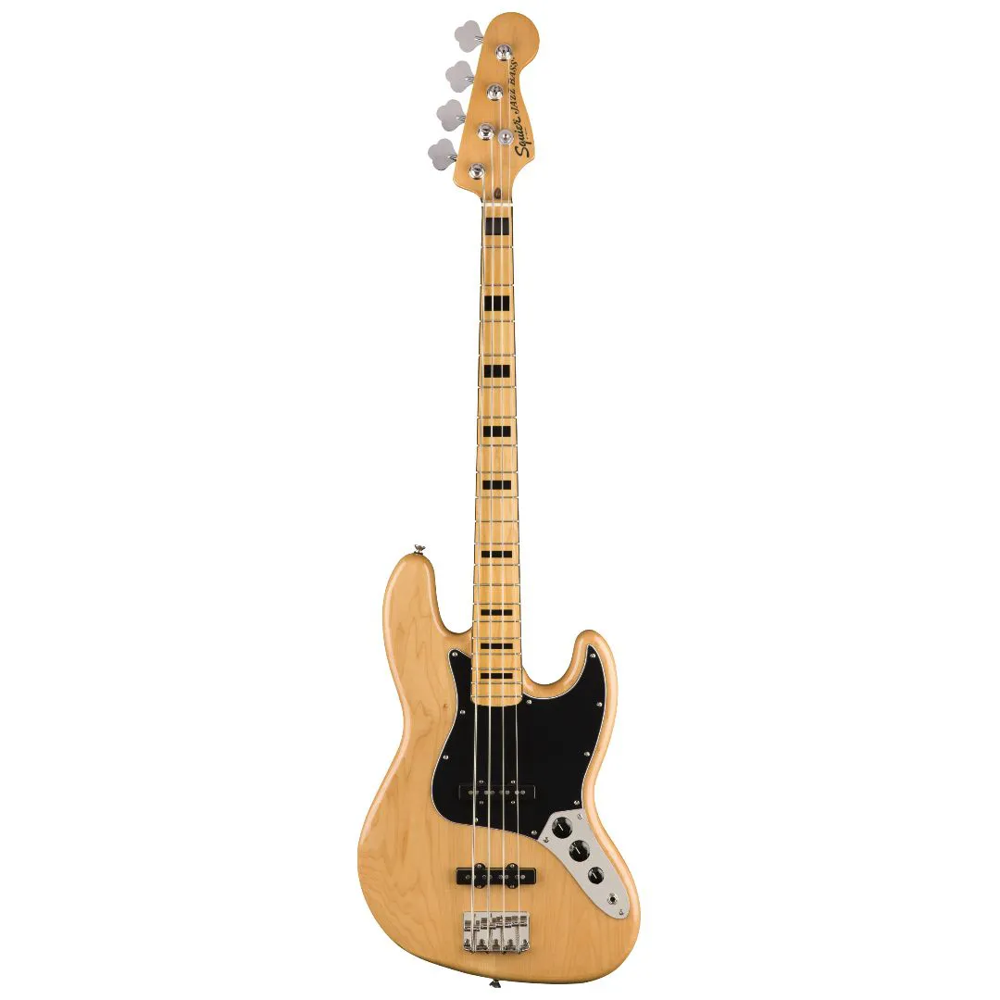
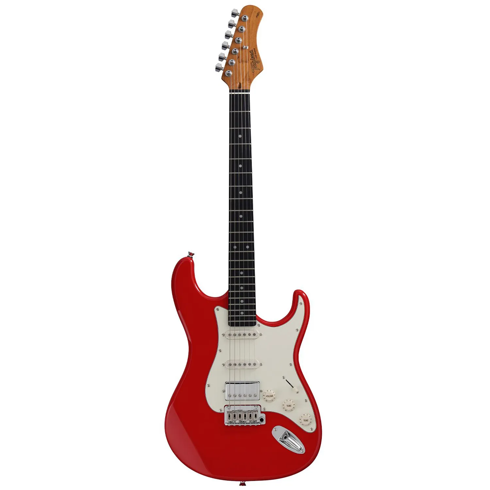
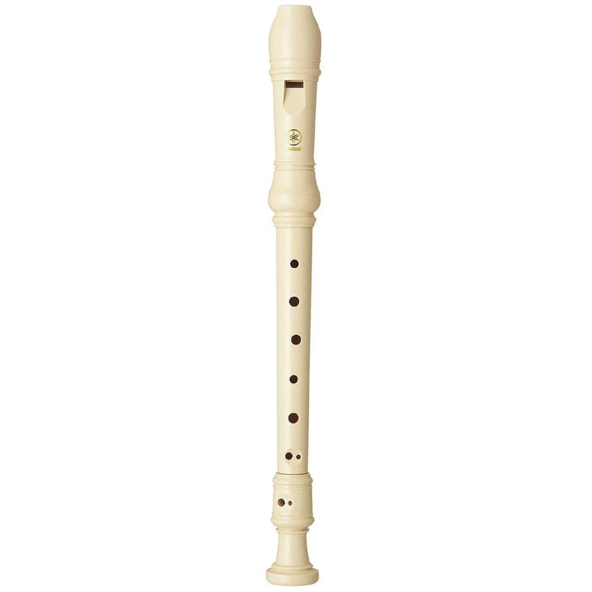

Escaleta
Clique para ver

Escaleta
Aulas de escaleta voltadas para iniciantes e músicos em desenvolvimento, trabalhando técnica, coordenação, percepção musical e execução de melodias de forma prática e dinâmica. O aprendizado inclui exercícios, repertório e acompanhamento personalizado para evolução gradual no instrumento.
Violão
Clique para ver

Violão
Aulas de violão pensadas para todos os níveis, desde iniciantes até alunos mais avançados. O foco é desenvolver técnica, ritmo, leitura de cifras e execução de músicas de forma prática e gradual. As aulas incluem exercícios, repertório variado e acompanhamento personalizado para evolução contínua no instrumento.
Teclado
Clique para ver

Teclado
Aulas de teclado voltadas para iniciantes e estudantes em evolução, com foco em técnica, coordenação das mãos, leitura musical e desenvolvimento rítmico. O aprendizado é feito de forma prática, com exercícios e repertório variado, ajudando o aluno a tocar músicas desde os primeiros níveis e evoluir com segurança no instrumento.
Violino
Clique para ver

Violino
Aulas de violino para iniciantes e alunos em desenvolvimento, com foco em postura, técnica de arco, afinação e leitura musical. O aprendizado é progressivo, combinando exercícios técnicos e repertório variado, promovendo sensibilidade musical e evolução consistente no instrumento.
Viola caipira
clique para ver!

Viola caipira
Aulas de viola caipira voltadas para iniciantes e músicos em desenvolvimento, com foco em afinação, batidas, ponteios e técnicas tradicionais do instrumento. O aprendizado é prático e progressivo, incluindo repertório da música sertaneja raiz e acompanhamento personalizado para evolução musical.
Ukulele
clique para ver!

Ukulele
Aulas de ukulele para iniciantes e alunos em evolução, com foco em acordes, ritmo, levadas e leitura de cifras. O aprendizado é leve e prático, com repertório variado e músicas populares, ajudando o aluno a tocar desde as primeiras aulas e desenvolver segurança no instrumento.
Baixo
clique para ver!

Baixo
Aulas de baixo elétrico voltadas para iniciantes e músicos em desenvolvimento, com foco em groove, ritmo, formação de linhas de baixo, leitura de cifras e técnica básica do instrumento. O aprendizado é prático e progressivo, com exercícios e repertório variado para desenvolver precisão, musicalidade e segurança ao tocar em grupo.
Guitarra
clique para ver!

Guitarra
Aulas de guitarra para iniciantes e alunos em desenvolvimento, com foco em técnica, acordes, riffs, escalas e desenvolvimento de ritmo. O aprendizado é prático e progressivo, incluindo exercícios e repertório variado, ajudando o aluno a ganhar segurança, criatividade e musicalidade no instrumento.
Flauta doce
clique para ver!

Flauta doce
Aulas de flauta doce voltadas para iniciantes e alunos em fase de aprendizado musical, com foco em respiração, postura, leitura de notas e execução de melodias simples. O ensino é leve e progressivo, com exercícios práticos e repertório variado, desenvolvendo musicalidade, coordenação e percepção sonora.